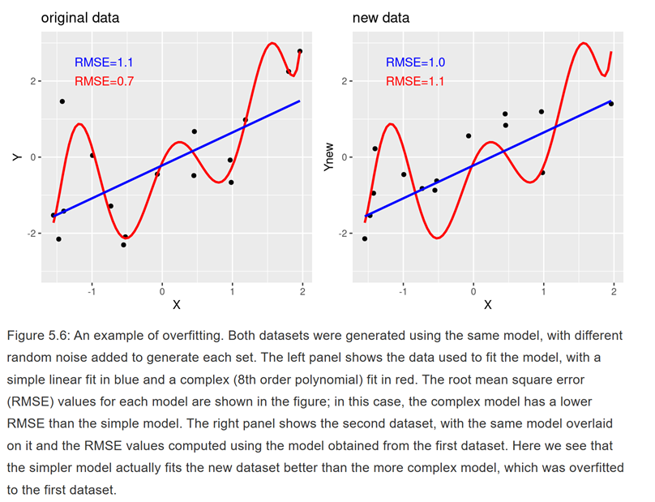

Lecture 12: The Model Based Perspective
Probability and Statistics
Most of what we have done so far has been developing a conceptual understanding about the relationship between probability and statistics
- The rules of probability govern how data are generated
- Statistics summarize samples of data
- Sampling distributions govern how we expect statistics to be distributed in (hypothetical) repeated samples
- Allows us to make practical inferences about the plausibility of observed statistics based on assumptions (null hypotheses) about a population
Models
Models are simplified representations of complex objects

Statistical Model
A statistical model is a simplified representation of a data generating (probabalistic) process.
Statistical models in their simplest form have the structure
\[\text{data} = \text{model} + \text{error}\]
- Goal: Minimize error
- Sometimes called a loss function
- How much information is lost between \(\text{model}\) and \(\text{data}\)
Model Usage
There are three common uses of statistical models
Describe: A statistical model can help us understand data by summarizing variables or mapping relationships between different variables
Predict: A statistical model can help us anticipate how we expect new observations not in our initial to arise
Decide: A statistical model can inform how we choose to behave by informing our beliefs and our expectations for the outcomes of our chosen behaviors
Though each of these use cases is slightly distinct, they are highly overlapping, and philosophy of science openly debates their relative importance.
Describing Data
We’ve already discussed ways to describe data quite a bit. Continuous variable, what is one single number that we might use to best describe the variable, if we had to choose
The mean
- The sum of all errors around the mean is always zero
- Because of this, summing errors isn’t very helpful
- We know the total amount of error isn’t zero!
- What else might we use for our loss function?
Loss Function: Squared Error
The most common loss function in statistics is minimization of squared error
- Minimized by the mean
We might minimized the sum of squared errors
\[\text{Sum of Squared Errors (SSE)} = \sum (x - \bar{x})^2\]
Where have we seen this term before though?
\[s^2 = \frac{\sum (x - \bar{x})^2}{N - 1}\]
Another term for variance: Mean squared error (MSE)
- SSE is sensitive to sample size: larger \(N \rightarrow\) larger sum of squared errors
- MSE is insensitive to sample size
- Doesn’t matter if you use \(N\) or \(N - 1\) as constant in denominator unless you are trying to estimate population variance from sample of data
- Root mean squared error (RMSE) \(=\sqrt{MSE}\)
- Like \(SD\), in original units (not squared units)
Proof
I want to minimize my function
\[f(a) = \sum_{i = 1}^n (x_i - a)^2\]
- Expand:
\[\sum_{i = 1}^n(x_i - a)^2 = \sum_{i = 1}^n x_i^2 - 2a \sum_{i = 1}^n x_i + na^2\]
- Take derivative with respect to \(a\):
\[\frac{d}{da} f(a) = -2 \sum_{i = 1}^n x_i + 2na\]
- Solve for the zero point:
\[0 = -2 \sum_{i = 1}^n x_i + 2na\]
\[2na = 2 \sum_{i = 1}^n x_i\]
\[a = \frac{1}{n} \sum_{i = 1}^n x_i = \frac{\sum_{i = 1}^n x}{n} = \bar{x}\]
Loss Function: Absolute Error
In some uses cases, you will see absolute error used over squared error
- Less sensitive to extreme values
- Lacks some desirable statistical properties
- E.g. additivity of variances (Pythagorean Rule of Statistics)
\[\text{Mean Absolute Error (MAE)} = \frac{\sum |x - \bar{x}|}{N}\]
- Minimized by median
Mean as Model
We can write a model using the mean to summarize our data as
\[x_i = \mu + \epsilon_i\]
- Note: the model uses \(\mu\), the parameter, which we can estimate with \(\bar{x}\), the statistic
- \(\epsilon_i\) is known as the residual or error
- \(\epsilon\) has a mean of 0 and standard deviation of \(\sigma\)
Model Predictions
Another way to write this model is in terms of predictions.
\[\hat{x}_i = \mu\]
- \(\hat{x}_i\) is the predicted value of \(x\)_i
Combining the two formulations, we can also say
\[\epsilon_i = x - \hat{x}_i\]
\[SSE = \sum (x - \hat{x}_i)^2\]
\[MSE = \frac{\sum (x - \hat{x}_i)^2}{N}\]
McCrea Revisited
Original Study:
McCrea, S. M. (2008). Self-handicapping, excuse making, and counterfactual thinking: Consequences for self-esteem and future motivation. Journal of Personality and Social Psychology, 2, 274-292.
Replication study link: https://osf.io/2kjgz
Step 1: Subject took a math exam and were told that they scored in the 35th percentile of university students
Step 2: Subjects saw statements supposedly written by previous participants
Self-handicap group: half of statements indicated that more practice would have improved their performance, half of statements were neutral
Control group: all statements were neutral
Step 3: Subjects took a second surprise math exam
Is The Mean Enough?
In the McCrea data, all participants took a math test after being assigned to either control or self-handicap.
Should we
- Use the overall mean to summarize these math scores?
- Should we use separate means for each group?
- How should we decide?
- How should we write our model?
Modeling Separate Means
How can I represent both group means in a single equation?
Let’s start by defining the control group as
\[\text{percent}_i = \beta_0 + \epsilon_i\]
Where \(\beta_0\) is the mean in the control group. How can I incorporate the self-handicap group?
Reminder: We can represent group assignment with the Cond variable, where 0 = control and 1 = self-handicap
What do you suppose \(\beta_1\) would represent in this equation?
\[\text{percent}_i = \beta_0 + \beta_1 \text{Cond} + \epsilon_i\]
\(\beta_1 = \text{mean of self-handicap} - \beta_0\)
The General Linear Model
On of the most common forms a statistical model can take is called the general linear model, which has the form
\[y_i = \beta_0 + \sum_{p=1}^P \beta_p x_{ip} + \epsilon_i\]
Where \(P\) is the number of predictor variables in our model.
- Predictor variables are sometimes referred to as independent variables
- In our example
Condcan be thought of as a predictor variable and \(P = 1\)
- In our example
- We can refer to \(y\) in this model as our outcome or dependent variable
- Math scores are the outcome variable in our example
- Some debate around the appropriate semantics, but terms are interchangeable in many settings
The parameters of a general linear model are \(\beta_0 \dots \beta_P\) AND \(\sigma^2_{\epsilon}\) (variance of the residuals)
Linear Algebra Form
Or we can use linear algebra to write our model more compactly as
\[\boldsymbol{y} = \boldsymbol{X\beta} + \boldsymbol{\epsilon}\]
Where
- \(\boldsymbol{y}\) is a vector of length \(N\) representing our outcome variable
- \(\boldsymbol{X}\) is an \(N \times P + 1\) matrix of predictors
- The first column is just a column vector of ones (to account for the intercept)
- \(\boldsymbol{\beta}\) is a vector of length \(P + 1\) of coefficients, including intercept
- \(\boldsymbol{\epsilon}\) is a vector of length \(N\) of residuals
Original \(t\)-test
t.test(percent ~ Cond, dat, var.equal = TRUE)
Two Sample t-test
data: percent by Cond
t = 2.3255, df = 59, p-value = 0.02351
alternative hypothesis: true difference in means between group control and group self-handicap is not equal to 0
95 percent confidence interval:
0.01636472 0.21820793
sample estimates:
mean in group control mean in group self-handicap
0.5834651 0.4661788 This was the \(t\)-test we saw previously (without the Welch-Satterthwaite adjustment)
Linear Model
We can write a general linear model in R using the lm() function and formula syntax and examine the output with summary(). The Coefficients table will show us information about \(\beta_0\) and \(\beta_1\). Let’s compare the output to the \(t\)-test we have already seen
lm1 <- lm(percent ~ Cond, dat)
summary(lm1)
Call:
lm(formula = percent ~ Cond, data = dat)
Residuals:
Min 1Q Median 3Q Max
-0.38347 -0.18347 0.03382 0.13382 0.41653
Coefficients:
Estimate Std. Error t value Pr(>|t|)
(Intercept) 0.58347 0.03653 15.972 <2e-16 ***
Condself-handicap -0.11729 0.05044 -2.325 0.0235 *
---
Signif. codes:
0 '***' 0.001 '**' 0.01 '*' 0.05 '.' 0.1 ' ' 1
Residual standard error: 0.1967 on 59 degrees of freedom
Multiple R-squared: 0.08396, Adjusted R-squared: 0.06844
F-statistic: 5.408 on 1 and 59 DF, p-value: 0.02351Similarities
- \(\beta_0 = \text{mean in group control} = 0.583\)
- \(\beta_0 + \beta_1 = \text{mean in group self-handicap} = 0.583 - 0.117 = 0.466\)
- \(t_{\bar{x}_1 - \bar{x}_2} = t_{\beta_1} = -2.325\)
- \(df_{\text{t-test}} = df_{\text{model}} = N = 2 = 59\)
Prediction
We’ve just seen how our general linear model with Cond as a lone predictor describes our data in terms of each group mean, and that we can perform a null hypothesis test that is equivalent to a \(t\)-test.
Now let’s think about prediction
We have estimated the following model
\[\text{percent}_i = 0.583 - .117(\text{Cond}) + \epsilon_i\]
Or
\[\hat{\text{percent}}_i = 0.583 - .117(\text{Cond})\]
We will start with the predicted values from our dataset
Predicted Values
I can manually recode Cond to the numeric values that match what I want and then plug in
dat$Cond_numeric <- ifelse(dat$Cond == "control", 0, 1)
(y_hat <- 0.583 - .117 * dat$Cond_numeric) [1] 0.466 0.466 0.466 0.466 0.466 0.466 0.466 0.466 0.466
[10] 0.466 0.466 0.466 0.466 0.466 0.466 0.466 0.466 0.466
[19] 0.466 0.466 0.466 0.466 0.466 0.466 0.466 0.466 0.466
[28] 0.466 0.466 0.466 0.466 0.466 0.583 0.583 0.583 0.583
[37] 0.583 0.583 0.583 0.583 0.583 0.583 0.583 0.583 0.583
[46] 0.583 0.583 0.583 0.583 0.583 0.583 0.583 0.583 0.583
[55] 0.583 0.583 0.583 0.583 0.583 0.583 0.583Or I can used the predict() function to do it for me
(y_hat <- predict(lm1)) 1 2 3 4 5 6
0.4661788 0.4661788 0.4661788 0.4661788 0.4661788 0.4661788
7 8 9 10 11 12
0.4661788 0.4661788 0.4661788 0.4661788 0.4661788 0.4661788
13 14 15 16 17 18
0.4661788 0.4661788 0.4661788 0.4661788 0.4661788 0.4661788
19 20 21 22 23 24
0.4661788 0.4661788 0.4661788 0.4661788 0.4661788 0.4661788
25 26 27 28 29 30
0.4661788 0.4661788 0.4661788 0.4661788 0.4661788 0.4661788
31 32 33 34 35 36
0.4661788 0.4661788 0.5834651 0.5834651 0.5834651 0.5834651
37 38 39 40 41 42
0.5834651 0.5834651 0.5834651 0.5834651 0.5834651 0.5834651
43 44 45 46 47 48
0.5834651 0.5834651 0.5834651 0.5834651 0.5834651 0.5834651
49 50 51 52 53 54
0.5834651 0.5834651 0.5834651 0.5834651 0.5834651 0.5834651
55 56 57 58 59 60
0.5834651 0.5834651 0.5834651 0.5834651 0.5834651 0.5834651
61
0.5834651 MSE and RMSE
\[\text{mean squared error (MSE)} = \frac{\sum (y - \hat{y}_i)^2}{N}\]
\[\text{root mean squared error (RMSE)} = \sqrt(MSE)\]
(mse <- mean((y_hat - dat$percent)^2))[1] 0.03742971(rmse <- sqrt(mse))[1] 0.1934676What can we do with these?
Model Comparison
One thing we might consider is whether this model, which assumes each group has a separate mean, makes better predictions than a simpler model
- Better predictions \(\rightarrow\) less error
- simpler model \(\rightarrow\) fewer parameters
What’s a model we might consider that has fewer parameters?
- A model that sets \(\beta_1 = 0\), meaning both groups share the same mean
Simpler Model
We already saw an example of the “mean as model” earlier, sometimes called an “unconditional model” or “intercept only” model.
In our running example, we would write it as
\[\text{percent}_i = \beta_0 + \epsilon_i\]
- In this model, \(\beta_0 = \mu\)
In R we write an unconditional model by putting a 1 on the right hand side of our formula
Unconditional model
lm_unconditional <- lm(percent ~ 1, dat)
summary(lm_unconditional)
Call:
lm(formula = percent ~ 1, data = dat)
Residuals:
Min 1Q Median 3Q Max
-0.40194 -0.12194 -0.02194 0.14473 0.47806
Coefficients:
Estimate Std. Error t value Pr(>|t|)
(Intercept) 0.5219 0.0261 20 <2e-16 ***
---
Signif. codes:
0 '***' 0.001 '**' 0.01 '*' 0.05 '.' 0.1 ' ' 1
Residual standard error: 0.2038 on 60 degrees of freedomPredicted Values
(y_hat_unconditional <- predict(lm_unconditional)) 1 2 3 4 5 6
0.5219378 0.5219378 0.5219378 0.5219378 0.5219378 0.5219378
7 8 9 10 11 12
0.5219378 0.5219378 0.5219378 0.5219378 0.5219378 0.5219378
13 14 15 16 17 18
0.5219378 0.5219378 0.5219378 0.5219378 0.5219378 0.5219378
19 20 21 22 23 24
0.5219378 0.5219378 0.5219378 0.5219378 0.5219378 0.5219378
25 26 27 28 29 30
0.5219378 0.5219378 0.5219378 0.5219378 0.5219378 0.5219378
31 32 33 34 35 36
0.5219378 0.5219378 0.5219378 0.5219378 0.5219378 0.5219378
37 38 39 40 41 42
0.5219378 0.5219378 0.5219378 0.5219378 0.5219378 0.5219378
43 44 45 46 47 48
0.5219378 0.5219378 0.5219378 0.5219378 0.5219378 0.5219378
49 50 51 52 53 54
0.5219378 0.5219378 0.5219378 0.5219378 0.5219378 0.5219378
55 56 57 58 59 60
0.5219378 0.5219378 0.5219378 0.5219378 0.5219378 0.5219378
61
0.5219378 Notice: Every single value is predicted to be \(\bar{x}\)!
MSE and RMSE
(mse_unconditional <- mean((y_hat_unconditional - dat$percent)^2))[1] 0.04086041(rmse_unconditional <- sqrt(mse_unconditional))[1] 0.2021396Compared to our original model, these values are higher, meaning there is more error
[1] 0.03742971[1] 0.1934676So the original model is better, right?
Overfit
In this example, we used the same data to fit or estimate the model as well we did to make predictions and evaluate error.
- Any time you add a predictor to a linear model you estimate, you will reduce error in the predictions
- This is known as “overfit”
- Bias in which a model captures random variation and treats it as informative signal
- In prediction, what we really care about is how well the model will predict new data
Overfit Visualized

New Data
If we want to validate our model on new data, instead of the same data we used to estimate it, how might we go about this?
- Go collect more data (expensive)
- Split our data into pieces (cheap)
- This is known as cross-validation
- Benefit: allows us to test how well model generalizes
- Cost: reduces our sample size so we can hold out some data for validation
- This is known as cross-validation
Procedure
- Specify a training dataset
- Used to estimate model(s)
- Specify a testing data
- Used to validate model(s)
- Estimate model on training data
- Make predictions about testing data using model(s) estimated on training data
- Calculate MSE/RMSE
- Select model with lowest MSE/RMSE
Example: Step 1 and 2
Our data groups subjects by IDs indicated by the variable Subject
I’m going to use the sample() function to select half of the subjects and put them in a training set, and leave the rest for a testing set.
subject_ids <- dat$Subject
set.seed(5211)
ids <- sample(subject_ids, size = length(subject_ids)/2)
dat1 <- dat %>% filter(Subject %in% ids) # Training data
dat2 <- dat %>% filter(!(Subject %in% ids)) # Testing dataExample: Step 3-6
Next I will estimate my “full” model that separates participants by Cond and my “reduced” (unconditional) model
lm_full <- lm(percent ~ Cond, dat1)
lm_reduced <- lm(percent ~ 1, dat1)The make predictions in my new dataset using the newdata = dat2 argument of the predict() function
predict_full <- predict(lm_full, newdata = dat2)
predict_reduced <- predict(lm_reduced, newdata = dat2)Then calculate RMSE in both cases
sqrt(mean((predict_full - dat2$percent)^2))[1] 0.2003373sqrt(mean((predict_reduced - dat2$percent)^2))[1] 0.2024428The full model made better predictions (lower error) even in new data
Reverse
We can also reverse the process, and swap which dataset we use for training and which we use for testing for a full two-way cross validation
lm_full <- lm(percent ~ Cond, dat2)
lm_reduced <- lm(percent ~ 1, dat2)
predict_full <- predict(lm_full, newdata = dat1)
predict_reduced <- predict(lm_reduced, newdata = dat1)
sqrt(mean((predict_full - dat1$percent)^2))[1] 0.1939625sqrt(mean((predict_reduced - dat1$percent)^2))[1] 0.2040043Once again, the full model made better predictions (lower error)
Alternative Procedures
Splitting the data in half is costly because of how much your sample size is reduced. Other options that keep the dataset (more) intact are
- \(k\)-fold cross validation
- Split the data into \(k\) different “folds” or subsets of equal size
- For each fold, train the model on the remaining \(k - 1\) folds, then test it on the held out \(k\)th fold
- Repeat for each fold
- Leave one out (LOO) cross validation:
- For each of the \(N\) datapoints in a dataset:
- Train model on the remaining \(N - 1\) datapoints
- Make prediction about the single held out datapoint
- For each of the \(N\) datapoints in a dataset:
Decide
So far we have discussed using statistical models to:
- Describe existing samples of data
- Make predictions about new data
But how does this help us? What do we do with this information?
Should we encourage or discourage self-handicapping based on the results of McCrea’s study?
Fisher vs. Neyman

Ronald Fisher (1890-1962)

Jerzy Neyman (1895-1980)
Inference vs. Behavior
Fisher:
- We build statistical models to test theories about the world
- Meant for learning (describing)
- Science is about inference
Neyman:
- We do inference to decide how to behave
- Inductive Behavior: Based on what I learned from data, should I behave as if self-handicapping is harmful or not?
- I can’t know for sure, but experiments and models help minimize my errors (costs)
Statistical Decision Theory
- Subfield of statistics focused on how to make choices based on what we learn from statistical models
- Interdisciplinary:
- Probability and statistics
- Economics
- Psychology
- Business and operations
- Covered in The Science of Decision Making (Offered Spring ’27)